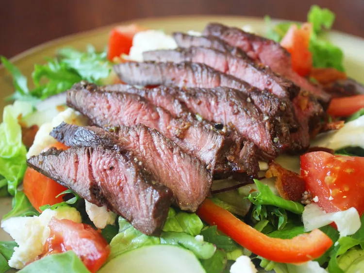
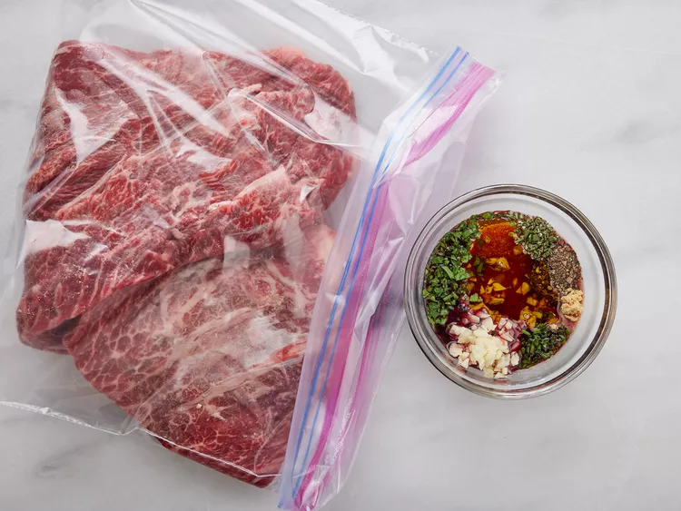
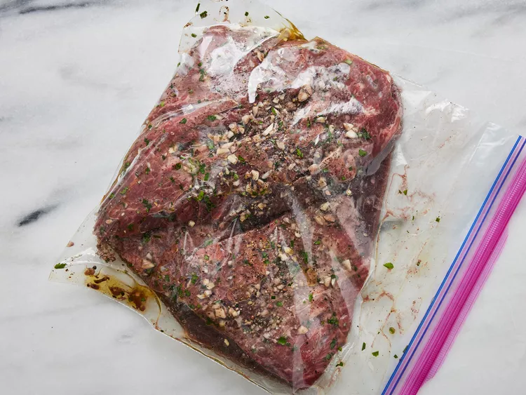
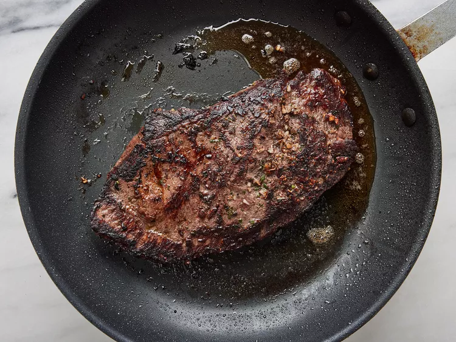
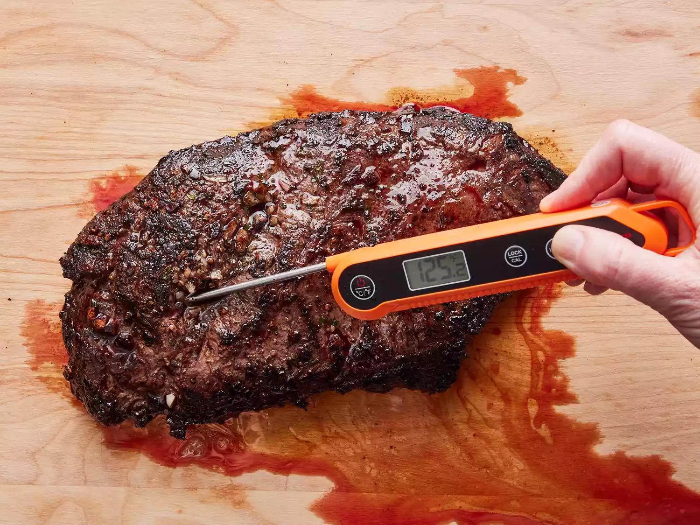

Flat iron steak is cut from beef shoulder. To make a flat iron steak, butchers remove the connective tissue to separate the top shoulder blade into two cuts: One is the top blade, the other is the flat iron.
Related:
What's the Difference Between Skirt, Flank, Hanger, and Flat Iron Steaks?This simple flat iron steak marinade (made with olive oil, garlic, parsley, rosemary, chives, red wine, salt, pepper and mustard powder) ensures flavorful and juicy meat every time. Make sure you marinate the steaks in the fridge for at least a few hours to reap the full benefits of the marinade.
You'll find the full, step-by-step recipe below, but here's a brief overview of what you can expect when you make this foolproof flat iron steak:
Marinate the steak in a resealable bag in the fridge for two to three hours. Sear the marinated steak in a hot skillet on both sides until it reaches your desired level of doneness. Discard the marinade and allow the meat to sit for a few minutes before digging in.
You'll find the full, step-by-step recipe below, but here's a brief overview of what you can expect when you make this foolproof flat iron steak:
Marinate the steak in a resealable bag in the fridge for two to three hours. Sear the marinated steak in a hot skillet on both sides until it reaches your desired level of doneness. Discard the marinade and allow the meat to sit for a few minutes before digging in.
A perfect steak deserves a perfect side dish (or two). Looking for some delicious inspiration? Explore our collection of 20 Best Side Dishes for Steak. Here are a few of the recipes you'll find:
As far as wine goes, flat iron steaks pair well with fruity cabernet sauvignons.
"Best steak ever," raves TxLady2. "I can't believe how good such a cheap cut could be. I'm not a fan of wine, red especially, so I used someone's suggestion to substitute balsamic vinegar and Worcestershire sauce instead."
"Your recipe is very aptly named," says Margo Crane. "This was hands-down the most fantabulous steak I have ever eaten!! The marinade was delicious and the meat almost melted in my mouth, it was so tender."
"Great recipe," according to CookinKate. "I made it per instructions, except I used all dried spices and I marinated the steak overnight. This is definitely the BEST version of flat iron steak I've ever made."
Step 1
place steak inside a large resealable bag. Stir olive oil, garlic, parsley, rosemary, chives, red wine, salt, pepper, and mustard powder together in a small bowl.
Step 2
Pour marinade over steak in the bag. Press out as much air as you can and seal the bag. Marinate in the refrigerator for 2 to 3 hours.
Step 3
Heat a nonstick skillet over medium-high heat. Sear and cook the steak in the hot skillet for 3 to 4 minutes on each side for medium rare, or to your desired degree of doneness. An instant-read thermometer inserted into the center should read 130 degrees F (54 degrees C) for medium rare.
 Step 4
Discard the marinade. Allow the steaks to rest for about 5 minutes before serving.